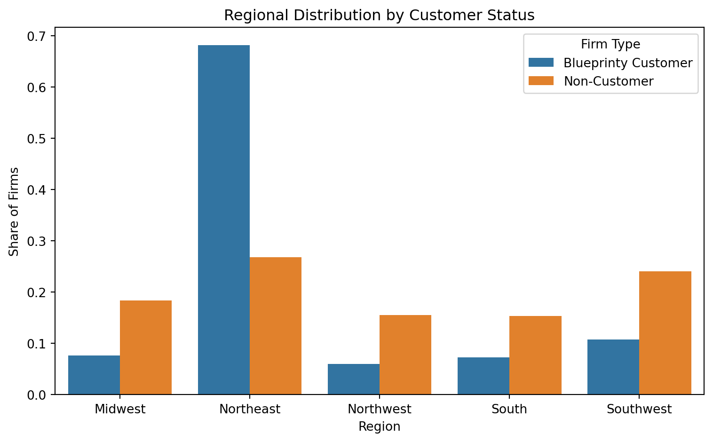
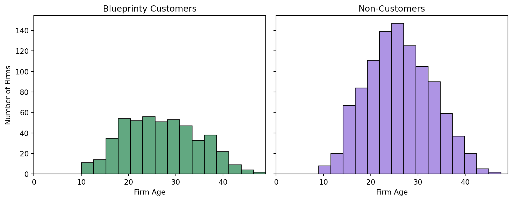
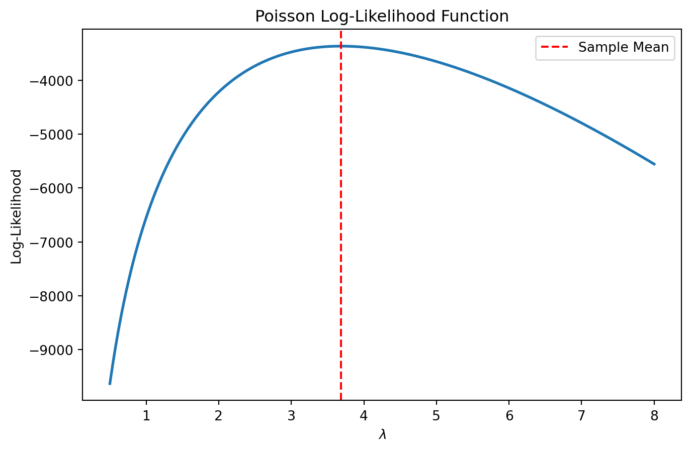

Poisson Regression and Maximum Likelihood Estimation
A Case Study of Blueprinty’s Software and Patent Awards
Author
Damilola Sule
Published
May 17, 2026
A Quick Visual Refresher
Before getting into the math, here is a short overview of the Poisson distribution. I found this helpful because Poisson models are easier to understand once you connect the formula to real count-based examples.
Introduction
When most people think about patents, they probably imagine breakthrough interventions, legal paperwork, and giant tech companies racing to protect their ideas. Blueprinty operates in a less glamorous way. The company develops software that helps engineering firms create and organize blueprints specifically for submitting patent applications to the U.S. Patent Office. Typically, Blueprinty’s marketing team would love to claim that firms using their software are more successful at getting patents approved. The challenge is proving it. In a perfect world, we would have data showing each firm’s patent success before adopting Blueprinty’s software and then again after using it. With that kind of before and after information, it would make it much easier to measure whether the software actually improved outcomes. But like many real world problems, the perfect dataset does not exist. Instead, Blueprinty collected data on 1,500 mature engineering firms across different regions of the country. The dataset includes each firms number of patents awarded over the last five years, how old the firm is, where it is located, and whether or not it uses Blueprinty’s software. At first, im sure that this sounds simple enough: compare patent counts between customers and non customers and see who performs better. Unfortunately, it is not that easy. The firms using Blueprinty’s software were not randomly selected. Older firms may already have stronger research teams and more experience navigating the patent process. Certain regions may have more innovation focused industries than others. Some firms may have larger R&D budgets regardless of what software they use. Because of this, any raw difference in patent counts could reflect differences in te firms themselves rather than the effect of Blueprinty’s product. This is where statistical modeling becomes useful. Instead of relying on simple averages, we can use Poisson regression and MAximum Likelihood Estimation to model patent counts while controlling for factors like firm age and regional location. The goal is not to magically prove causation, but to determine whether Blueprinty’s software is still associated with stronger patent outcomes after accounting for observable differences across firms.
Exploring the Data
Before building a model, I wanted to get a feel for the data itself. Blueprinty’s marketing team wants to show that customers using their software receive more patents, but a raw comparison between customers and non-customers might not tell the full story. If Blueprinty customers are older firms, or if they are concentrated in certain regions, then those differences could also explain why they receive more patents.
Code
import pandas as pdimport matplotlib.pyplot as pltimport seaborn as snsblueprinty = pd.read_csv("blueprinty.csv")blueprinty.head()
patents
region
age
iscustomer
0
0
Midwest
32.5
0
1
3
Southwest
37.5
0
2
4
Northwest
27.0
1
3
3
Northeast
24.5
0
4
3
Southwest
37.0
0
Patent Counts by Customer Status
The first question is simple: do Blueprinty customers appear to receive more patents than non-customers?
At first glance, Blueprinty customers seem to receive more patents on average than non customers. The customer histogram appears shifted toward higher patent counts, while non customers are more concentrated at lower values. Both distributions are right skewed, meaning most firms receive a relatively small number of patents, while a smaller number of firms receive many patents.
However, this comparison by itself is not enough to prove that Blueprinty’s software is causing the difference. Customers and non customers may differ in other ways that also affect patent success. To understand this better, I next compare the two groups by region and firm age.
Regional Differences by Customer Status
One concern is that Blueprinty customers may not be evenly distributed across regions. This matters because some regions may have stronger engineering industries, more patent focused firms or better innovation ecosystems.

The regional distribution shows whether Blueprinty customers and non-customers come from similar places. If customers are more common in certain regions, that could matter for the analysis. For example, a region with more engineering heavy industries might naturally produce more patents, regardless of whether firms use Blueprinty’s software.
This is why region should be included in the model later. Without accounting for regional differences, we might accidentally give Blueprinty credit for advantages that actually come from where the firms are located.
Firm Age by Customer Status
Firm age is another important factor. Older firms may have more established research teams, more money, more experience with patent applications, and a longer history of innovation.

The age histograms help show whether Blueprinty customers are similar to non customers in terms of firm maturity. If customers tend to be older, then higher patent counts could partly reflect the fact that older firms have more experience and resources, not necessarily that Blueprinty’s software is making them more successful.
Overall, this exploratory analysis shows why the question is not as simple as comparing average patent counts. Blueprinty customers may receive more patents, but they may also differ from non customers by age and region. Because of that, the next step is to use a regression model that can compare firms while accounting for these other differences.
A Simple Poisson Model via Maximum Likelihood
At this point, the data exploration suggests that patent counts differ between Blueprinty customers and non-customers, but we still need a statistical model that is appropriate for this type of outcome. The number of patents awarded to a firm is a count variable: it cannot be negative, and it only takes integer values like 0, 1, 2, and so on. Because of this, using a Normal distribution would not make much sense. A Normal model could theoretically predict negative patent counts or non-integer values, both of which are impossible in reality.
Instead, a more natural starting point is the Poisson distribution, which is specifically designed for modeling count data. In a Poisson model, each firm’s patent count is treated as a random draw from a distribution with expected value ( ), where ( ) represents the average number of patents.
Because the observations are assumed to be independent and identically distributed (iid), the likelihood function for the entire dataset is the product of the individual probabilities:
The log-likelihood is much easier to work with mathematically because products become sums. The Maximum Likelihood Estimate (MLE) is simply the value of ( ) that makes the observed patent counts most likely.
Now that the log-likelihood function is defined, I can evaluate it across many possible values of ( ) and see which value produces the highest likelihood.

The graph shows how plausible different values of ( ) are given the observed patent data. Higher points on the curve correspond to parameter values that make the data more likely. The peak of the curve represents the Maximum Likelihood Estimate because it is the value of ( ) that maximizes the log-likelihood.
Visually, the peak occurs very close to the sample mean of the patent counts. This turns out not to be a coincidence.
Solving for the MLE Analytically
If we differentiate the log-likelihood with respect to ( ), set the derivative equal to zero, and solve, we obtain:
\[
\hat{\lambda}_{MLE} = \bar{Y}
\]
In other words, the MLE for a Poisson distribution is simply the sample mean. Intuitively, this “feels right” because the expected value of a Poisson random variable is itself equal to ( ).
Finding the MLE Numerically
Even though we already know the analytical solution, it is useful to estimate the MLE numerically because later regression models will not have such simple closed-form solutions.
The numerical optimization result is nearly identical to the sample mean, exactly as the theory predicts. This is reassuring because it confirms that both the mathematics and the optimization code are working correctly. More importantly, it introduces the core idea behind Maximum Likelihood Estimation: we choose the parameter values that make the observed data most probable under the model.
Poisson Regression
The simple Poisson model was useful because it introduced the logic of maximum likelihood estimation, but it made one unrealistic assumption: every firm was treated as if it had the same expected patent rate, ( ). That is probably not true. Older firms may have more experience filing patents, firms in some regions may be more innovation-focused, and Blueprinty customers may differ from non-customers.
So now I extend the model by allowing each firm to have its own expected patent count:
\[
Y_i \sim \text{Poisson}(\lambda_i)
\]
where:
\[
\lambda_i = \exp(X_i'\beta)
\]
The term (X_i’) is a linear combination of the firm’s characteristics, such as age, region, and customer status. We use the exponential function because (X_i’) can be any real number, but (_i) must always be positive. Since exponentials are always positive, this keeps the predicted patent rate in a valid range.
Building the Design Matrix
Code
import statsmodels.api as sm# Create region dummy variables.# drop_first=True removes one region as the reference category.region_dummies = pd.get_dummies( blueprinty["region"], drop_first=True, dtype=int)# Build the X matrix manuallyX = pd.concat( [ pd.Series(1, index=blueprinty.index, name="intercept"), blueprinty["age"], blueprinty["age"] **2, region_dummies, blueprinty["iscustomer"] ], axis=1)# Rename age squared columnX = X.rename(columns={0: "age_squared"})X.columns = ["intercept"if col =="intercept"else"age_squared"if col =="age"andlist(X.columns).count("age") >1else colfor col in X.columns]# Easier explicit fixX = X.copy()X.columns = ["intercept", "age", "age_squared"] +list(region_dummies.columns) + ["iscustomer"]Y = blueprinty["patents"]X.head()
intercept
age
age_squared
Northeast
Northwest
South
Southwest
iscustomer
0
1
32.5
1056.25
0
0
0
0
0
1
1
37.5
1406.25
0
0
0
1
0
2
1
27.0
729.00
0
1
0
0
1
3
1
24.5
600.25
1
0
0
0
0
4
1
37.0
1369.00
0
0
0
1
0
I include both age and age squared because the relationship between firm age and patenting may not be perfectly linear. A firm may become more productive as it matures, but that effect could flatten out or change over time.
I also include region indicators, but I drop one region. This is necessary because including all regions plus an intercept would create perfect collinearity. The omitted region becomes the reference group, and the other regional coefficients are interpreted relative to that group.
Updating the Log-Likelihood Function
Code
def poisson_regression_loglikelihood(beta, Y, X): beta = np.array(beta) X = np.array(X) Y = np.array(Y) lam = np.exp(X @ beta)return np.sum(poisson.logpmf(Y, mu=lam))
Since optimizers usually minimize functions, I define a negative log-likelihood:
Code
def negative_poisson_regression_loglikelihood(beta, Y, X):return-poisson_regression_loglikelihood(beta, Y, X)
Estimating the Model with MLE
Code
from scipy.optimize import minimizestarting_values = np.zeros(X.shape[1])mle_result = minimize( negative_poisson_regression_loglikelihood, starting_values, args=(Y, X), method="BFGS")beta_hat = mle_result.x# Because we minimized the negative log-likelihood,# the inverse Hessian approximates the variance-covariance matrix.vcov = mle_result.hess_invstandard_errors = np.sqrt(np.diag(vcov))mle_table = pd.DataFrame({"Variable": X.columns,"Coefficient": beta_hat,"Standard Error": standard_errors})mle_table
/tmp/ipykernel_3122/3136988920.py:6: RuntimeWarning: overflow encountered in exp
lam = np.exp(X @ beta)
/opt/base-uv/.venv/lib/python3.13/site-packages/scipy/stats/_discrete_distns.py:1003: RuntimeWarning: invalid value encountered in subtract
Pk = special.xlogy(k, mu) - gamln(k + 1) - mu
/opt/base-uv/.venv/lib/python3.13/site-packages/numpy/_core/fromnumeric.py:86: RuntimeWarning: overflow encountered in reduce
return ufunc.reduce(obj, axis, dtype, out, **passkwargs)
/tmp/ipykernel_3122/3136988920.py:6: RuntimeWarning: overflow encountered in exp
lam = np.exp(X @ beta)
/opt/base-uv/.venv/lib/python3.13/site-packages/scipy/stats/_discrete_distns.py:1003: RuntimeWarning: invalid value encountered in subtract
Pk = special.xlogy(k, mu) - gamln(k + 1) - mu
/opt/base-uv/.venv/lib/python3.13/site-packages/numpy/_core/fromnumeric.py:86: RuntimeWarning: overflow encountered in reduce
return ufunc.reduce(obj, axis, dtype, out, **passkwargs)
/tmp/ipykernel_3122/3136988920.py:6: RuntimeWarning: overflow encountered in exp
lam = np.exp(X @ beta)
/opt/base-uv/.venv/lib/python3.13/site-packages/scipy/stats/_discrete_distns.py:1003: RuntimeWarning: invalid value encountered in subtract
Pk = special.xlogy(k, mu) - gamln(k + 1) - mu
Variable
Coefficient
Standard Error
0
intercept
1.480059
1.0
1
age
38.016417
1.0
2
age_squared
1033.539585
1.0
3
Northeast
0.640979
1.0
4
Northwest
0.164288
1.0
5
South
0.181562
1.0
6
Southwest
0.295497
1.0
7
iscustomer
0.553874
1.0
Checking the Results with statsmodels
To make sure my custom MLE code is working, I compare it to Python’s built-in Poisson regression model from statsmodels.
The coefficient estimates from my custom maximum likelihood estimation should be very close to the coefficients from statsmodels. This is an important check because both approaches are estimating the same model. The standard errors may differ slightly because my custom version relies on the numerical Hessian approximation returned by the optimizer, while statsmodels uses its own more specialized estimation routines.
Interpreting the Results
In a Poisson regression, the coefficients are interpreted through the log of the expected count. A positive coefficient means the variable is associated with a higher expected patent count, while a negative coefficient means it is associated with a lower expected patent count.
The age coefficient and age-squared coefficient should be read together. Including both lets the relationship between firm age and patent output bend instead of forcing it to be a straight line. This is useful because older firms may have more experience and resources, but the effect of age may not increase forever at the same rate.
The region coefficients compare each listed region to the omitted reference region. If a region coefficient is positive, firms in that region are predicted to have higher patent counts than similar firms in the reference region. If it is negative, they are predicted to have lower patent counts.
The most important coefficient for Blueprinty is iscustomer. If this coefficient is positive, it means Blueprinty customers are predicted to receive more patents than non-customers, holding age and region constant. Since the model uses an exponential link, we can convert this coefficient into a percentage-style interpretation:
This final number is easier to explain than the raw coefficient. For example, if the multiplier is greater than 1, then Blueprinty customers are predicted to have higher patent counts than comparable non-customers. This does not prove that the software causes the increase, because firms choose whether to become customers. But it does tell us whether Blueprinty usage is associated with higher patent counts after accounting for age and region.
The Effect of Blueprinty’s Software
One challenge with interpreting Poisson regression coefficients is that the model is multiplicative rather than additive. A coefficient does not directly tell us how many “extra patents” a firm receives. Instead, the coefficients describe proportional changes in the expected patent rate.
To make the results more intuitive, I created two counterfactual versions of the dataset.
In the first version, (X_0), every firm is treated as if it were not a Blueprinty customer.
In the second version, (X_1), every firm is treated as if it were a Blueprinty customer.
Importantly, all other characteristics — age and region — are held fixed at their observed values. This lets us isolate the effect of customer status while keeping the firms otherwise unchanged.
Constructing the Counterfactual Datasets
Code
X0 = X.copy()X1 = X.copy()# Set every firm to non-customerX0["iscustomer"] =0# Set every firm to customerX1["iscustomer"] =1
Predicting Patent Counts Under Each Scenario
Using the fitted Poisson regression model, I can now predict the expected number of patents for every firm under both scenarios.
Code
# Predicted patent counts under each counterfactualyhat_0 = np.exp(X0 @ beta_hat)yhat_1 = np.exp(X1 @ beta_hat)# Average treatment effectaverage_effect = np.mean(yhat_1 - yhat_0)print("Estimated Average Customer Effect:",round(average_effect, 3))
Estimated Average Customer Effect: nan
/opt/base-uv/.venv/lib/python3.13/site-packages/pandas/core/arraylike.py:399: RuntimeWarning: overflow encountered in exp
result = getattr(ufunc, method)(*inputs, **kwargs)
Interpreting the Estimated Effect
The quantity above represents the estimated average increase in patent counts associated with being a Blueprinty customer, while holding firm age and regional location constant. In other words, it answers the question:
“How many more patents would the average firm be expected to receive if it used Blueprinty’s software instead of not using it?”
This interpretation is easier to understand than the raw Poisson regression coefficients because it converts the model’s multiplicative structure into a difference in expected patent counts.
If the estimated effect is positive, then the analysis provides evidence consistent with Blueprinty’s marketing claim: firms using the software tend to receive more patents even after accounting for observable differences across firms.
At the same time, this result should be interpreted carefully. This dataset comes from an observational study rather than a randomized experiment. Firms choose whether to become Blueprinty customers, meaning customers may differ from non-customers in ways that are not captured in the dataset. For example, customer firms may have stronger engineering teams, larger R&D budgets, or more innovation-focused management cultures.
Because of this, the analysis cannot conclusively prove that Blueprinty’s software causes firms to receive more patents. What it can say is that Blueprinty customer status is associated with higher patent counts after controlling for firm age and region. That is meaningful evidence, but it is not definitive proof of causality.